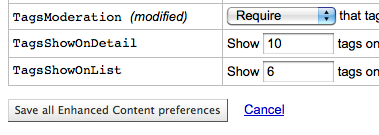

全局系统参数
全局系统参数控制您的 Koha 系统工作的方式。在 Koha 工作之前需要设置这些系统参数。
在这里： 更多 > 管理 > 全局系统参数

系统参数可以通过管理页面顶端的检索框检索（可以通过参数名字或者描述中的任意部分进行检索）也可以通过每个系统参数设置页面顶端的检索框检索。

当编辑参数时，在您修改过的项目后面会有 ^(修改过)^ 标记，直到您点击“保存所有”按钮：

当您保存参数时您会受到哪些参数您已经保存的确认信息：

每部分参数都可以通过点击“参数”标题栏右侧的小箭头来按照字母顺序排序

如果首选项涉及货币值（如 maxoutstanding），则显示的货币将是您在管理区域的 Currencies and exchange rates 中设置的默认值。在后面的示例中，它们都将读作 USD，也就是 U.S.Dollars。
重要
For libraries systems with unique URLs for each site the system preference can be overridden by editing your koha-http.conf file this has to be done by a system administrator or someone with access to your system files. For example if all libraries but one want to have search terms highlighted in results you set the OpacHighlightedWords preference to ‘Highlight’ then edit the koha-http.conf for the library that wants this turned off by adding ‘SetEnv OVERRIDE_SYSPREF_OpacHighlightedWords “0”’. After restarting the web server that one library will no longer see highlighted terms. Consult with your system administrator for more information.